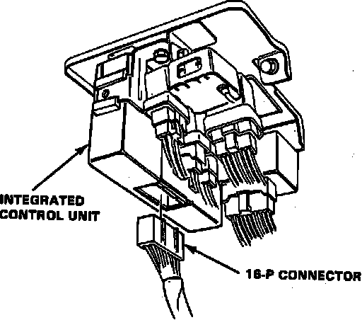

Charge Lamp/Indicator: Testing and Inspection
1. Ensure alternator belt is properly adjusted and that all electrical connections are secure and free from corrosion.2. Observe warning lamp with ignition on and engine not running.
3. If warning lamp does not light, disconnect electrical connector from alternator and short the white/blue wire in terminal to ground.
4. If lamp still does not light, check the following:
a. Blown fuse No. 4 in dash fuse panel or defective bulb.
b. Open in black/yellow wire between warning lamp and fuse panel or between fuse panel and ignition switch.
c. Open in white/blue wire between warning lamp and voltage regulator.
5. If lamp lights in step 3, perform ALTERNATOR & REGULATOR TEST.
6. Run engine at idle and observe warning lamp.
7. If lamp stays lit, perform ALTERNATOR & REGULATOR TEST.
Fig. 11 Integrated Control Unit Electrical Connector:

8. If system is charging normally, proceed as follows:
a. Stop engine, remove lower dash panel, then disconnect 16-pin connector from integrated control unit, Fig. 11.
b. Start engine and observe warning lamp. If lamp goes out, there is a short in the control unit. If lamp remains lit, proceed to next step.
c. Stop engine, remove right kick panel, then disconnect 13-pin connector from retractable headlamp control unit.
d. Start engine and observe warning lamp. If lamp goes out, there is a short in the headlamp control unit. If lamp remains lit, there is a short to ground in the white/blue wire between warning lamp and control unit.